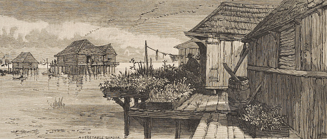

Year 1763Manila Men and their settlement of St. Malo in Louisiana | |
 |
1763 The Manila Men arrived in Louisiana on the eve of the Seven Years' War, seeking refuge in the marshlands near New Orleans to escape Spanish authorities. This area, later known as St. Malo, became the first permanent Asian American settlement in the U.S. Named after Juan San Malo, a leader of runaway enslaved individuals, the settlement thrived as the Manila Men connected with the maroons. Built on stilts in a style reminiscent of Filipino architecture, St. Malo developed into a prosperous fishing village. The Manila Men, skilled in fishing and shrimping, introduced innovative practices like the shrimp dance for efficiently separating shrimp shells from meat, significantly impacting the local shrimping industry. |